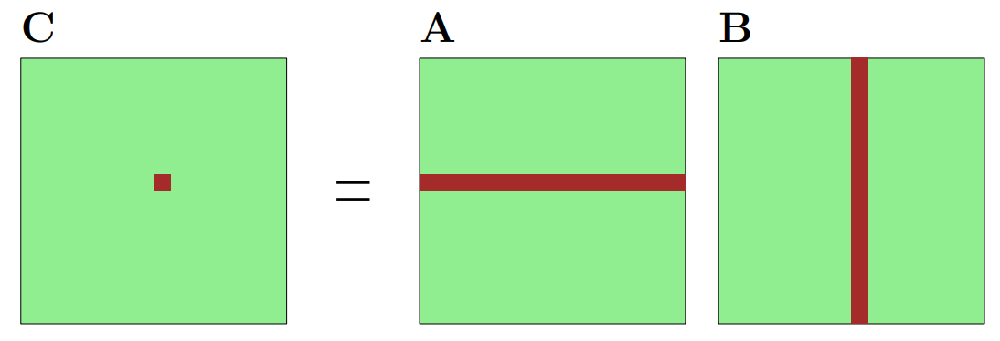
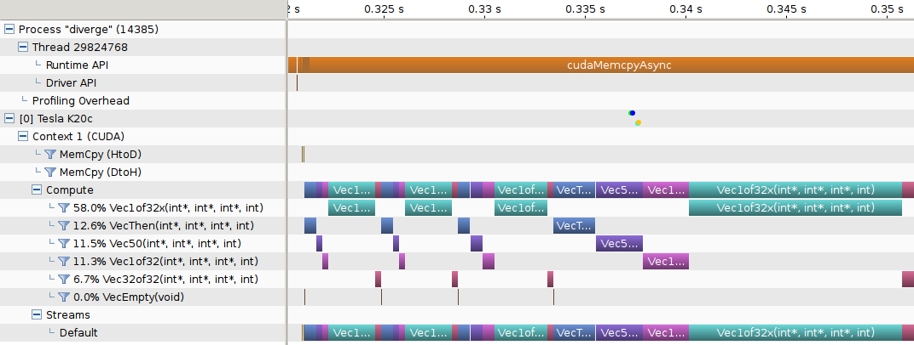
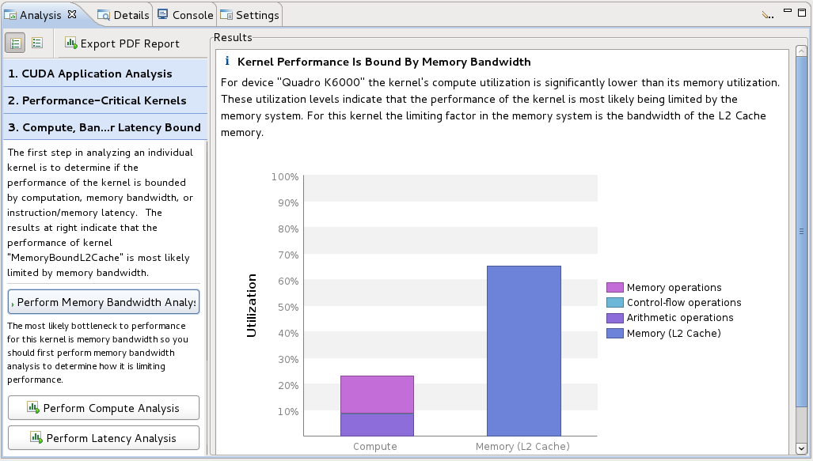
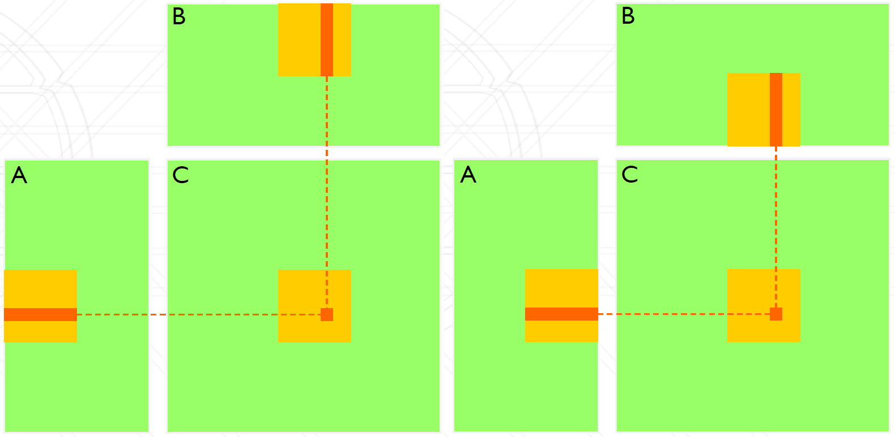

8. Advanced CUDA Programming
Overview
In this lab, we will look at advanced CUDA topics including shared memory and asynchronous execution. We will also look at how to profile and fine-tune the performance of a parallel GPU program. If you haven’t done the previous lab, you should work on that first as the topics here are considered to be more advanced.
Good luck and enjoy!
Matrix Multiplication
Consider a matrix-matrix multiplication problem, i.e., $C = A \times B$. To multiply an $m \times n$ matrix ($A$) by an $n \times p$ matrix ($B$), the $n$s must be the same, and the result is an $m \times p$ matrix ($C$).

Figure 1: Matrix Multiplication
The matrix multiplication can be calculated with the following equation:
\[C_{i,j} = \sum_k A_{i,k}B_{k,j}\]Based on this equation, we can start by writing a very basic serial version of matrix multiplication:
void matrix_multiplication(double **A, double **B, double **C, int M, int N, int P)
{
// initialization C with zeros
for (int i = 0; i < M; i++)
for (int j = 0; j < N; j++)
C[i][j] = 0;
for (int i = 0; i < M; i++)
for (int j = 0; j < N; j++)
for (int k = 0; k < P; k++)
C[i][j] += A[i][k]*B[k][j];
}
To help you start, you can find an example C code in the following .zip file. In this example, the program reads the data of Matrix A and Matrix B from two files, then multiply them.
Attached File: matrix.zip
Note
To profile your CUDA code, you will need a much larger matrix, say 1024 x 1024 or 2048 x 2048 (otherwise the execution time of the kernel would be negligible compared to memory copy, etc). You can either generate your own
matrix.datfile following the format, or use the random matrix generator provided in the code, which randomally assign a value between (0,1) to each element in the matrix.
Exercise 1
Rewrite the above code in CUDA with 1D thread blocks. Replace the function with a kernel and write a
mainfunction to launch that kernel function. At this first stage, make it as simple as possible. Later on, this will be used as the baseline and gradually improve it.Note that you need to design a verification process to validate the results are correct.
Exercise 2
Time the program you have written in Exercise 1 using
cudaEventElapsedTime(). Then profile your code withnvprof. These should give you similar if not identical results.
Profiling with Visual Profiler (Optional)
One of the additional profiling tools that we didn’t mention in the unit is the Visual Profiler which allows you to analyse and visualise the performance of your application. The Visual Profiler gives you a different view that helps you to understand the CPU and GPU activities. You may find it is functionally similar to Intel Advisor.
For example, a Timeline view shows GPU events with elapsed time:

Figure 2: Timeline View in Visual Profiler
The other useful view is the Analysis View, which is used to control application analysis and to display the analysis results. Two analysis modes exist in Analysis View, which are guided and unguided:
- Guided mode: the analysis system will guide you through multiple analysis stages to help you understand the likely performance limiters and optimization opportunities in your application.
- Unguided mode: let you manually explore all the analysis results collected for your application.

Figure 3: Analysis View in Visual Profiler
Note
If you have a problem to run nvvp due to JVM, try to run it with a different version OpenJDK using:
> nvvp -vm /usr/lib/jvm/java-8-openjdk-amd64/jre/bin/java
Exercise 3
Rewrite your code with 2D kernels. After you have done that, use automatic block size tuning (
cudaOccupancyMaxPotentialBlockSize(...)). Note that this only gives a block size and you have to work out your own 2D/3D block dimension to match your problem size.Plot the performance against different parameters and see how automatic tuning performs. You can first collect the performance data, then use MATLAB, Python with matplotlib, or Excel to plot the results.
Occupancy is an important concept to achieve performant CUDA programs, you can refer to the CUDA Occupancy Calculator as it would give you some insight into what to consider in terms of performance tuning.
Exercise 4
The kernel function is not efficient as Matrix A is read N times, and B is read M times. Now try to improve your kernel function with Shared Memory.
Tips:
- Decompose the problem: each block computes a submatrix (illustrated as below).
- Make sure that data is only loaded once from the main memory and then stored in shared memory.
- Use
__syncthreads()where appropriate to avoid race condition.
Figure 4: Sub-Matrix Multiplication
Exercise 5
Profile different versions of your implementations. Plot the results and make a comparison of their performance. For example, you may want to compare the following different versions:
- Simple CPU
- Simple GPU
- GPU with optimized block size
- GPU with shared memory
Further Reading
- CUDA C++ Best Practices Guide, NVIDIA.
- Profiler User’s Guide, NVIDIA.